Principle of Virtual Work - equilibrium conditions
This section aims at finding the equilibrium conditions using the Principle of virtual work
Forces
Vector of forces in ground frame
| > | W1 := <0,-m__1*g,0>:
W2 := <0,-m__2*g,0>: W3 := <0,-m__3*g,0>: |
Spring and damper forces
| > | fs__2(t):= K__s2*s__2(t)+C__s2*diff(s__2(t),t); # force linear model is defined with positive sign according to constitutive equation of the element
fs__3(t):= K__s3*s__3(t)+C__s3*diff(s__3(t),t); Fs__2 := -fs__2(t)*is_uvec__2; # force is defined with minus sign since from the node balance it acts on the body Fs__3 := -fs__3(t)*is_uvec__3; |
| 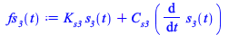 | |
| 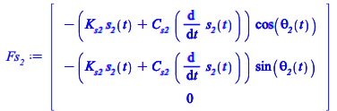 | |
| (4.1) |
Virtual work
Procedure to compute the dot (i.e. scalar product as vector products)
| > | dot_prod := proc(v1::Vector,v2::Vector)
Transpose(v1).v2; end: |
Spring and Damper work
| > | VW_spring_damper__2 := simplify(+dot_prod(Transpose(Rs__2).(+Fs__2),Transpose(Rs__2).VG2)
+dot_prod(Transpose(Rs__2).(-Fs__2),Transpose(Rs__2).VP2) ); |
| 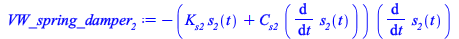 | (4.2) |
| > | VW_spring_damper__3 := simplify(+dot_prod(Transpose(Rs__3).(+Fs__3),Transpose(Rs__3).VG3)
+dot_prod(Transpose(Rs__3).(-Fs__3),Transpose(Rs__3).VP3) ); |
| 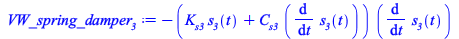 | (4.3) |
Overall Virtual Work
| > | PVW := dot_prod(W1,VG1)
+dot_prod(W2,VG2) +dot_prod(W3,VG3) +VW_spring_damper__2 +VW_spring_damper__3; |
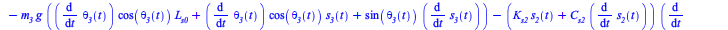 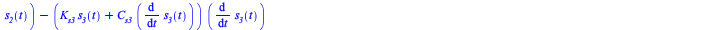 |
(4.4) |
Equation of motion
Substitute the virtual velocities of the dependent coordinates as a function of the independent
| > | simplify(subs( vel_qD_vars, PVW ));
PVW_I := collect(%,diff(qI_vars,t)); |
| 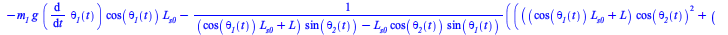 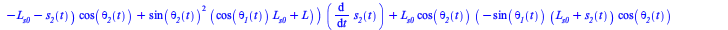 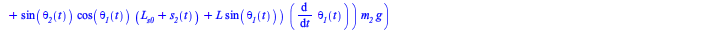 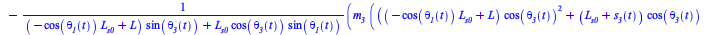 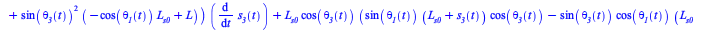 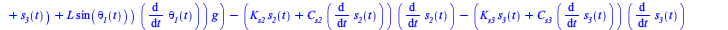 |
|
| 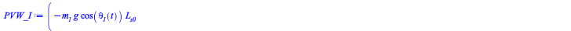 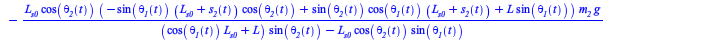 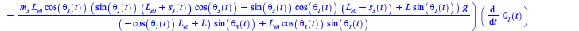 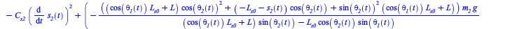 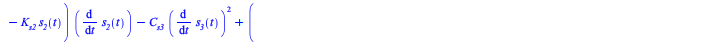 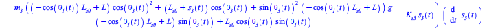 |
(4.5) |
Collect for the independent coordinate virtual displacement
| > | AA,BB := GenerateMatrix([PVW_I],diff(qI_vars,t));
|
 |
(4.6) |
The equations of motions are the element in the vector AA.
| > | eqns:= AA[1,1..3];
nops(%); |
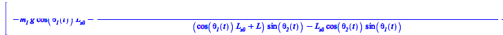 |
|
| (4.7) |
| > | PVW__eqns := subs(theta__1(t)=theta__1,theta__2(t)=theta__2,theta__3(t)=theta__3,s__2(t)=s__2,s__3(t)=s__3,(convert(eqns,set) union convert(Phi,set)));
PVW__vars := convert(subs(theta__1(t)=theta__1,theta__2(t)=theta__2,theta__3(t)=theta__3,s__2(t)=s__2,s__3(t)=s__3,q_vars),set); |
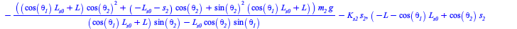 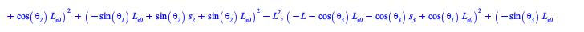 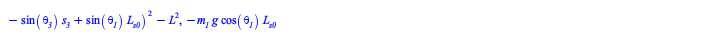 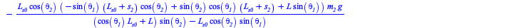 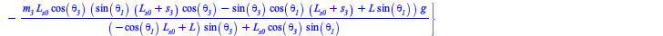 |
|
| 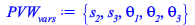 | (4.8) |
We can substitute the data and solve the equations in order to find the equilibrium conditions of the mechanical system
| > | data := [L = 1, L__s0 = 1, m__1 = 10, m__2 = 2, m__3 = 30, g = 9.81,
K__s2 = 5000, C__s2 = 10, K__s3 = 100000, C__s3 = 100]; |
| 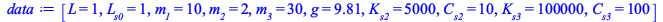 | (4.9) |
| > | subs(data,PVW__eqns); |
| 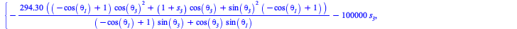 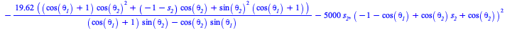 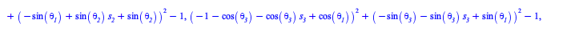 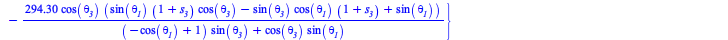 |
(4.10) |
Equilibrium conditions of the mechanical system
| > | sol_fs := fsolve(subs(data,PVW__eqns),PVW__vars,{s__2=-1..1,s__3=-1..1,theta__1=-Pi..0,theta__2=-Pi..0, theta__3=-Pi..0}); |
| 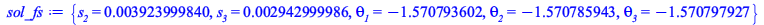 | (4.11) |
System analysis